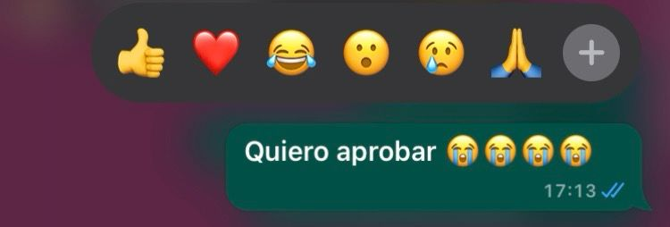
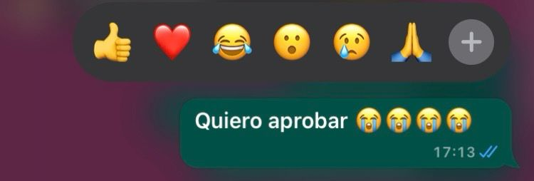

Mi proceso de trabajo
Con el boton vas a poder jugar para salvar a pinocho
Un poco sobre mi
Tengo 19 años y vivo en La Plata. Actualmente estoy muy feliz por la carrera que elegi, nunca imagine que iba a poder programar, lo veia como algo muy complicado(igual si) pero aprendi muchas cosas este año y quiero seguir desarrollando mis conocimientos porque aunque me ponga mal cuando algo no me sale, me gusta cuando se ven los resultados del proceso. Durante este trabajo fue donde mas me gusto la materia, me senti muy bien trabajando de esta manera, el tener que llevar avances era como que me alentaba a sentarme y trabajar a pesar de las complicaciones.
Como llegue hasta aca?
Durante este ultimo tiempo donde debi hacer la aventura gráfica y el mini-juego fue el real 'una lloradita y a seguir'. Al ser una persona que se estresa muy facil y que es muy exigente en lo academico, resulto muy dificil convivir con el 'desaprobado' adjunto pruebas del acontecimiento:
 


Pero a la hora de realizar este tp final sinceramente me senti muy bien, disfrute el proceso y me dedique por completo, tal vez es son muy sencillos mis trabajos pero para mi es un avance increible, de no saber ni como dfescargar processing a estar utiizando visual e intentar colaborar en unity, es increible todo lo que aprendi este año
Bocetos y referencias
Esta fue la base con la que arraque a trabajar mi aventura grafica y con la cual me guie en todo momentos
A la hora de pensar en la estetica me inspire en la pelicula live action de Pinocho que esta buenisima:
No es que sea una fanatica de pinocho pero me parece una historia interesante y llena de emocion, me gusto mucho poder trabajar con ella y divertirme un rato
No me puedo olvidar de...
Mis compañeros de cuarto: Grana y Bordo. Quienes soportaron mis angustias y en mis malos ratos no dejaron de brindarme amor

Y obvio tambien, a las dos amigas que me dio este año que me soportaron mis llantos y con las que les gusta ir a progamar a un cafe